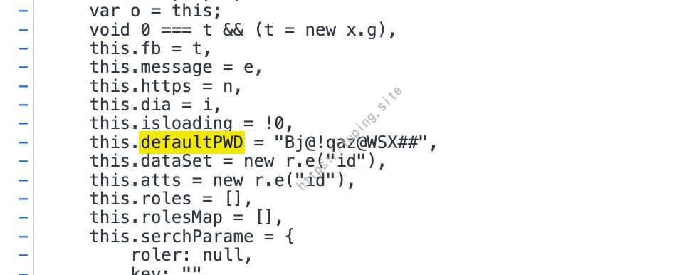
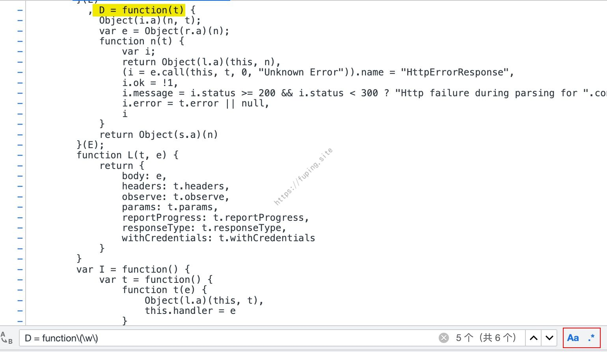
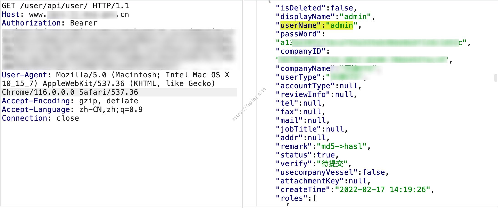
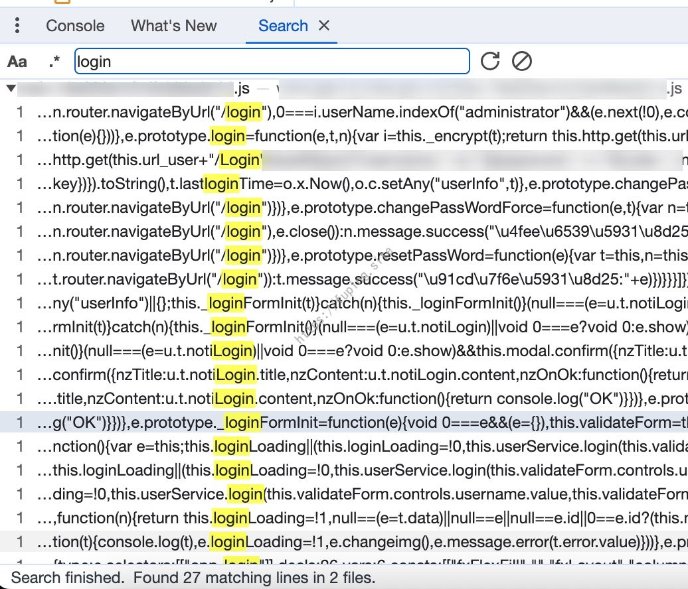
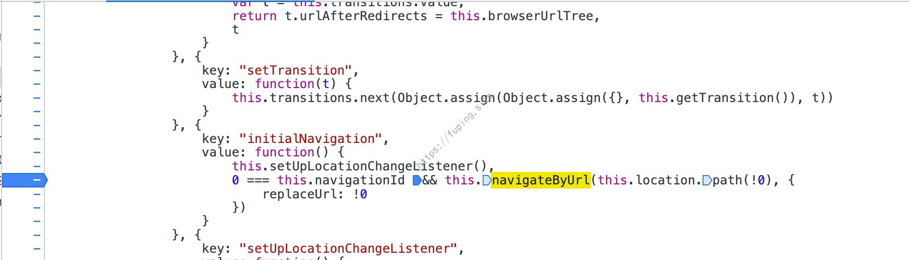
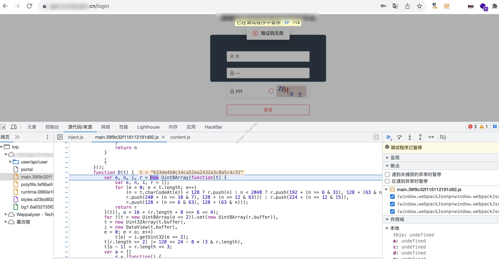

【渗透案例】消失的登录页面
0x00前言
在某次测试过程中，遇到了这样一个网站，存在登录页面但却无法直接通过地址栏访问login页面。在 JS 文件中发现了默认密码，同时找到了登录接口，然而密码进行了加密。通过分析JS文件，最终通过两种方式来实现了登录，一种是找到密码的加密方法，一种是让登录接口”重见天日”。
0x01过程
网站主页都是一些展示的内容，js文件是通过webpack打包的，格式化后大概三十多万行。
通过js文件发现了一些接口，其中有些接口存在未授权访问漏洞。而且有一个接口可以查看上传的所有附件信息，其中还包含了用户名。
通过分析JS文件，发现存在默认密码

而且也找到了登录的接口，一共两个，一个是Login，一个是LoginApp，其中LoginApp不需要验证码。
目前有登录的接口、一部分用户名（从未授权中获取的），还有系统的默认密码，接下来就是测试那些用户使用了默认密码，可以成功登录。但是从登录接口发现，登录过程中密码采用了_encrypt函数进行加密。
大概如下：
1 | t.prototype._encrypt = function(t) { |
可以猜测首先对密码进行了Md5加密后，又经过了D函数进行加密。接下来可以寻找D函数是如何进行加密的。
一般情况下，D函数有如下两种定义的方法：
1 | function D(params){ |
然后我们可以通过下面的两种正则进行搜索。
1 | D = function\(\w\) |

幸好D函数不多，也没有混淆，经过确认D函数是SHA1加密。
而且经过验证，成功找到了几个可以登录的账号。
登录后，某个接口可以列举所有的用户，包括该用户加密后的密码。

例如登录admin用户。
回过头来继续看登录页面，直接浏览器访问https://test.com/login 时，会重定向到主页。
通过搜索js文件

发现了n.router.navigateByUrl("/login")，这是一个用于在前端Web应用中进行路由导航的代码片段。它通常在前端框架或库（如Angular、Vue.js、React等）中使用，用于导航到指定的路由或页面。
当执行它时，应用程序会导航到 /login 路由或页面。

因此我们导航加载的位置，然后执行router.navigateByUrl("/login")，这里是this.navigateByUrl("/login")
成功的跳转到了登录的页面
通过验证，Login接口密码也是经过了md5后再进行SHA1加密。

0x02总结
这个网站虽然存在登录页面，但无法直接通过URL访问。通过分析JS代码发现了默认密码，了解了密码加密方式。通过API接口，找到了未授权访问漏洞，获取了用户名，实现了登录。另外通过分析js，可以使用router.navigateByUrl("/login")来导航到登录页面，从而让登录页面出现，然后通过登录页面来登录。